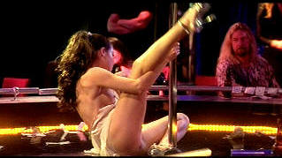

| Dancing at the Blue Iguana (SE)/ C+, A- |
| Trimark//2001/124/WS 1.85 |
The tawdry backstage at the Blue Iguana strip club is a mix of dashed dreams, cynical reality, and hope against hope. Amidst twisting gyrating flesh, a mystery evolves; a message on the telephone answering machine, a Russian hit man with a mission, an old boy friend, a new girl at the club, and changing relationships. But the mystery never evolves or develops. Dancing at the Blue Iguana becomes more perverted soap opera than mystery. Perhaps, owing to the improvisational creation of the production, the stories developed by each actor are less than perfectly connected. Just as bar owner Eddie Hazel, one of the best characters in Blue Iguana, is stopped dead in his tracks by the cries of the answering machine, so too is the audience. You get the sense that these people are ready to explode. They haven't done anything bad, but danger lurks about like a heavy scent of perfume, attractive yet repelling.
 |
| New girl showing off her stuff. ©Trimark |
Director Michael Radford chooses to stay in close
and on top of the flesh of the dancers, moving in for close-ups of exposed
body parts. No gyration goes unturned. It promotes a disquieting,
uncomfortable air. Radford finds an excellent rhythm for this ensemble
piece. Each segment gets a reasonable balance promoting a general feeling
of unease. Radford does a good job of weaving the disjointed stories into
a single fabric.
The stories are often left hanging
like plumes of smoke drifting through the club. There's too much dancing.
It definitely saps energy from the narrative, whatever there is of it. The
screenplay is based on an improv workshop with the contributions of the
main stars. Generally speaking, Dancing at the Blue Iguana is well
acted. Darryl Hannah is a totally gonzo Angel, the spaced out lead dancer
of The Blue Iguana. Hannah captures the lost sense of reality with
pathetic accuracy. W. Earl Brown is outstanding as Bobby, totally natural
and seemingly in his element. Robert Wisdom shines as Eddie. The girls are
a mixed bag on the dance floor and I think there's a strange inconsistency
in Darryl Hannah's Angel, but maybe it's part and parcel of her character.
Jennifer Tilly is funny and explosive as Jo.
A very sharp transfer rivaling fine anamorphic
transfer. Plenty of light output and excellent contrast range provide an
comfortable platform for full range images. Interiors of Blue Iguana are
very well lit for maximum punch and excellent depth. Fine range of skin
tones. There's no edginess or evident peak transitional ringing. I thought
I noticed a few minor digital dropouts in one scene, but it could have
been from the lighting. Some of the dialogue is slightly distorted and
difficult to understand.
A 58-minute documentary accompanies the feature in this
special edition. It covers the process of making Dancing at the Blue
Iguana with thoroughness and in some ways is better than the film itself.
There is also ten minutes of deleted or extended scenes. Finally, there
are two commentaries. Sheila Kelly wrote the original script ten years
ago. Stars Sheila Kelly, Sandra Oh, Robert Wisdom watch the film and
comment on the experience. On another commentary track, director Michael
Radford talks about the production.
Reviewed on a Sharp 9000VX DLP Projector

Selections from the feature archive include articles on Akira Kurosawa, Frank Darabont, Blonde Bimbos, Hollywood Street Gangs, or Vietnam: The Hollywood Pariah, and many
more....
Gotta Dance
 Fred and Ginger tapped their way into the hearts of
movie fans everywhere. Stu Kobak takes a look at some of those
dance movies that gifted audiences toe-tapping pleasure. Click on the
image to get in on the beat.
Fred and Ginger tapped their way into the hearts of
movie fans everywhere. Stu Kobak takes a look at some of those
dance movies that gifted audiences toe-tapping pleasure. Click on the
image to get in on the beat.

Take a look at the merry images of America's gift to the movies: Hollywood Musical Posters are featured from The Movie Poster Archive.

Click on the DVD MIA symbol for profiles of DVDs missing
in action.
Add films to the DVD MIA Master List by filling out a simple
form. Click Here

Mother Night/A-/A-
The eccentric style of Nick Nolte is perfect for the angst ridden Howard
W. Campbell, Jr., a hero or a villain.

I just love to watch the FBI Warning and that isn't enough, I am treated
to a graphic designer's wet logo dream.
FBI Warning/
Logo Wars

Selections from the Feature
Archive include articles on Akira Kurosawa, Blonde Bimbos, Frank Darabont, Steven Culp, John Herzfeld or Vietnam: The Hollywood Pariah, and many
more....
The Bitch Brigade

A line-up of lean-lipped actresses who marched through
Hollywood in a high heeled goose step armed with razor sharp dialogue.
Click on the image to read all about them.
OP